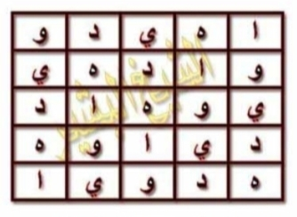

arab
طَرِيقَةُ الْمُيَسَّرَةِ فِي جَلْبِ الْأَرْزَاقِ
وَهَذَا وَفْقُ الْعَمَلِ
▼ Wafaq Amal 5×5 — di bawah «وَهَذَا وَفْقُ الْعَمَلِ»

[Gambar: Wafaq Mukhammas 5×5 — 25 petak — و ا هـ د ي]
وَهَذَا الْوَفْقُ الْمُرَبَّعُ الَّذِي نَزَلْنَا فِيهِ الرَّوْحَانِيَّ
▼ Wafaq Ruhani 4×4 — di bawah «وَهَذَا الْوَفْقُ الْمُرَبَّعُ الَّذِي نَزَلْنَا فِيهِ الرَّوْحَانِيَّ»

[Gambar: Wafaq Murabba' 4×4 — 16 petak — س م س ن ل ن ر]
وَعَدَدُ الْعَزِيمَةِ 196 مَرَّةً مَعَ التَّوَجُّهِ إِلَى اللهِ عَزَّ وَجَلَّ بِطَلَبِكَ
أَسْأَلُ اللهَ عَزَّ وَجَلَّ أَنْ يَنْفَعَكُمْ بِهَذِهِ الذَّخِيرَةِ الْمُبَارَكَةِ إِنَّهُ وَلِيُّ ذَلِكَ وَالْقَادِرُ عَلَيْهِ وَالسَّلَامُ
latin
Ṭarīqatu al-Muyassarati fī Jalbi al-Arzāqi
Wa-hādhā Wafqu al-ʿAmali
— [Wafaq 5×5 sisip] —
Wa-hādhā al-Wafqu al-Murabbaʿu alladhī nazalnā fīhi ar-Rūḥāniyyi
— [Wafaq 4×4 sisip] —
Wa-ʿadadu al-ʿAzīmati 196 marratan ...
Wa-hādhā Wafqu al-ʿAmali
— [Wafaq 5×5 sisip] —
Wa-hādhā al-Wafqu al-Murabbaʿu alladhī nazalnā fīhi ar-Rūḥāniyyi
— [Wafaq 4×4 sisip] —
Wa-ʿadadu al-ʿAzīmati 196 marratan ...
Terjemahan
Dan inilah wafaq amalan — ▼ Wafaq 5×5
Dan inilah wafaq persegi yang kita turunkan di dalamnya (huruf) ruhaninya — ▼ Wafaq 4×4
Jumlah wiridnya 196 kali ...
Aku memohon kepada Allah ... Wassalam.
Dan inilah wafaq persegi yang kita turunkan di dalamnya (huruf) ruhaninya — ▼ Wafaq 4×4
Jumlah wiridnya 196 kali ...
Aku memohon kepada Allah ... Wassalam.
Penempatan 100% sesuai kitab: wafaq 1 di bawah «وهذا وفق العمل», wafaq 2 di bawah «وهذا الوفق المربع الذي نزلنا فيه الروحاني» — bukan di akhir halaman